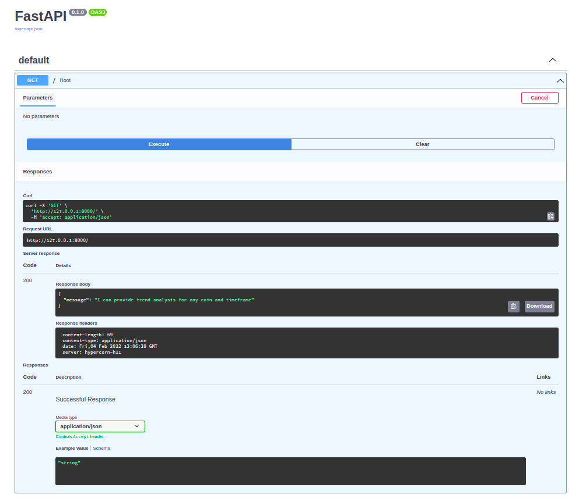
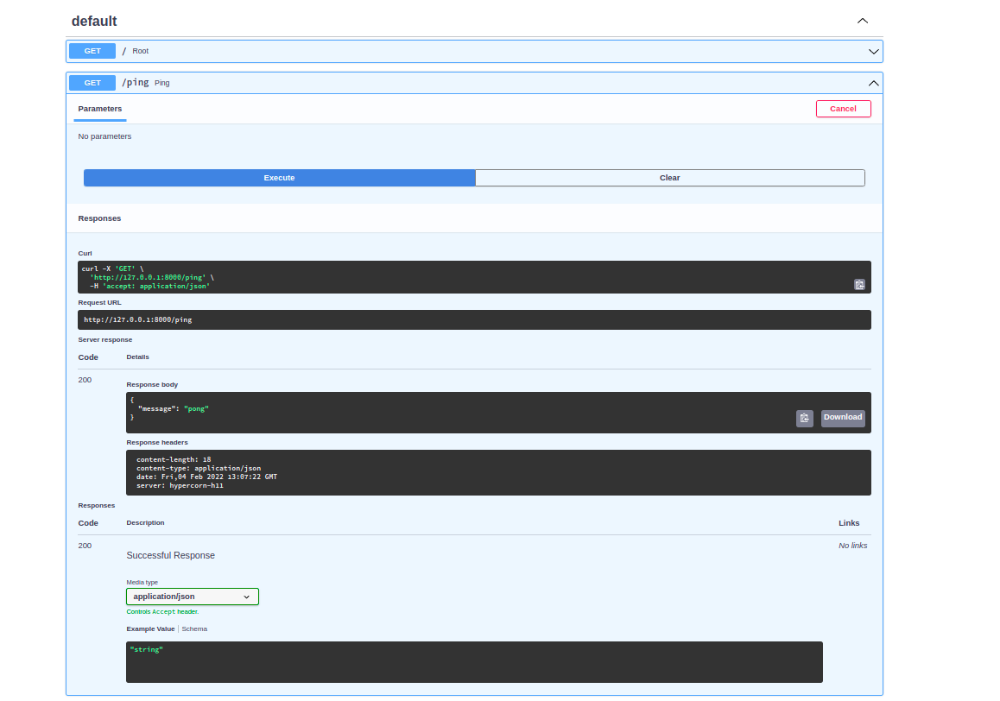
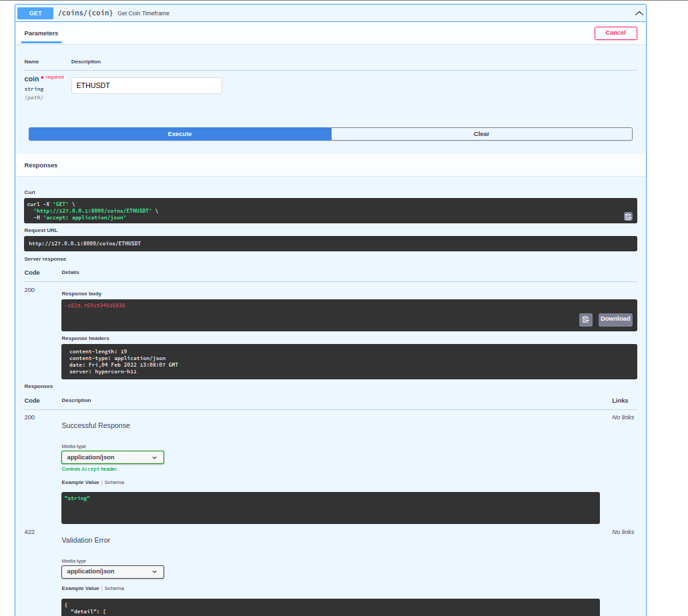
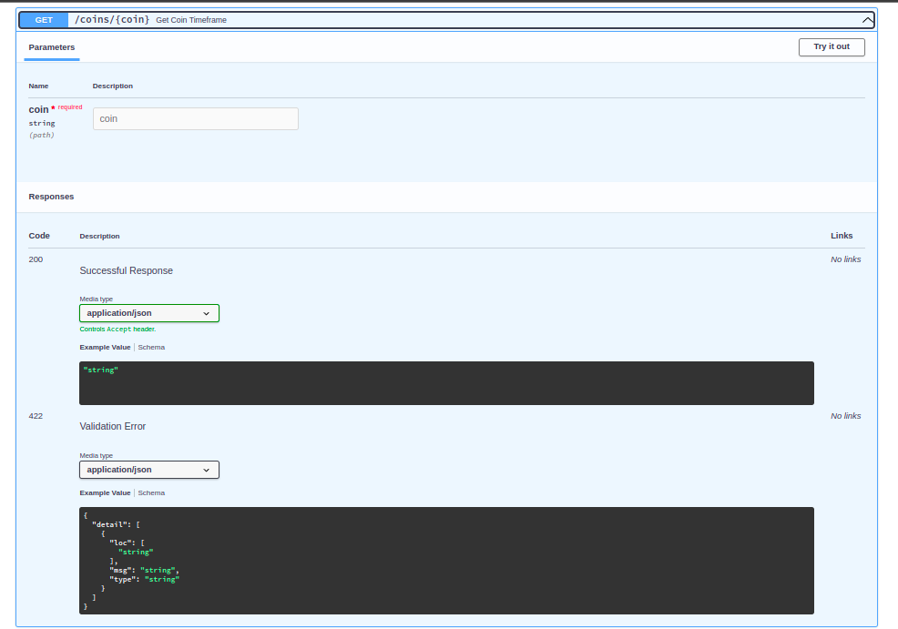
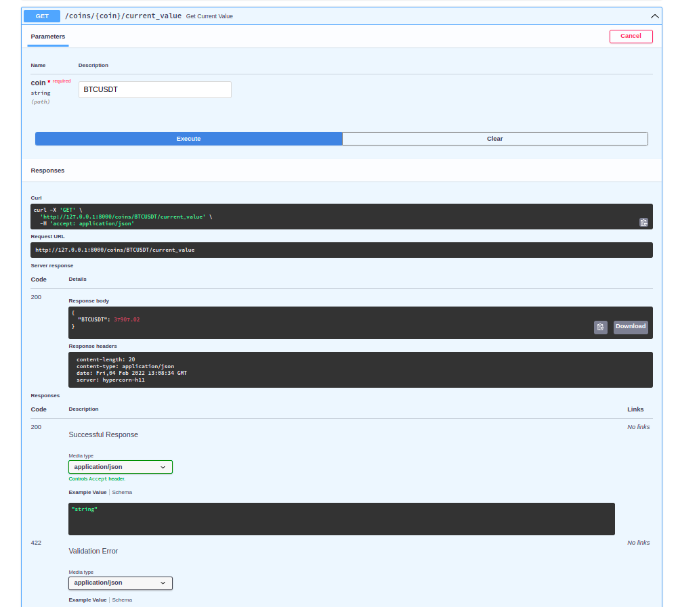

A complex market making bot. Which works with both candles and ticks to create signals for cryptocurrency trading. But in this project we are able to send signals through api.(Signal's supported are, cryptocurrency prices,Klines,indicators,trend of that coin etc.,)
Api docs : Visual api requests and Api usage documentation
- Assuming you have already installed the gcc compiler,cmake tools,python3.8,and pip3. within a python env or globally
bash install.sh.config.json as per your requirements.python3 main.py1. Indicators values
2. kline's
3. Trend
4. ZigZag values.
Note:
- The given examples works when the api port is opened at 127.0.0.1:8000
- You should use your specific port if its not default.
- The api is not secured.(http requests are used)
hypercorn azure_api.py:app --reloadAvailable indicators are:
Available timeframe's are:
Example api call:
Get ping pong request:
curl -X 'GET' http://127.0.0.1:8000/ping'
output: {"message":"pong"}
Current price of a coin
curl -X 'GET' http://127.0.0.1:8000/coins/BTCUSDT/current_value
Get Current trend:
curl -X 'GET' 'http://127.0.0.1:8000/coins/BTCUSDT' -H 'accept: application/json'
output: floating value. 500.0
Get current indicators:
curl -X 'GET' 'http://127.0.0.1:8000/coins/ETHUSDT/timeframe/5m/indicators/aroon' -H 'accept: application/json'
output: {"aroon_5m_1": [["50.0", " 42.85714285714286", " -7.142857142857143"]]}
To get available indicators20.204.67.186rl -X 'GET' 'http://127.0.0.1:8000/indicators/' -H 'accept: application/json' output:{"ema": [9,25,50,100],"rsi": [6,14],"atr": [14],"macd": [1],"aroon": [1]}``
check this images for reference     
TO try out the api check this endpoint in the browser: docs
check[api docs](http://52.168.70.31:8000/redoc/)
All this works when the api server is running in your local machine.
trend --
1. RSI
* RSI price slope
2. Ema short and long - is ema more(down trend) or less(up trend) and ema present is less than before(down trend) or more than before(up trend)
3. Macd - histogram
4. Aroon -upper and lower
5. Resistance and support levels
Should only check in higher timeframe(Relatively) : more than 15 min always.(I.e informative)
* Check Slope of present value of RSI and previous local min or max
* Check present value of price and previous local min or max.
* if slop difference (rsi_slope-price_slope) is negative:
* Then the trend reversal may happen = x1 -> Inversely proportional to the trend
else:
* The trend is not changing = x2 -> Directly proportional to the trend
* present value - Ema_long = b -> Directly proportional to the trend
* EMA_short_Previous - EMA_short_Current = c -> Directly proportional to the trend
* EMA_long_Previous - EMA_long_Current = d -> Directly proportional to the trend
aroon_down = min(0),max(100) = 1/z2 -> Inversely proportional to the trend
1/(present value - support) -- min(0) -> Inversely proportional to the trend = k2
* parameters -> self,RSI(present)
* function -> Check if RSI is in local min or max
* return -> RSI(present)
* parameters -> self,RSI(informative_all),close_prices(informative_all)
* function ->* call get_slope(RSI)
* call get_slope(close_prices)
slope_difference = slope_RSI - slope_close_prices
if slope_difference is negative:
* return 1/slope_difference
elsif slope_difference is positive:
* return slope_difference
else:
* return 0
* parameters -> self,ema_short(present),value(present)
* function->------------------------------------------Need to add functionality to check n previous values and get the average of them.(difference).
* difference = present value - ema_short
return difference
* parameters -> self,ema_long(present),value(present)-----last n values
* function->------------------------------------------Need to add functionality to check n previous values and get the average of them.(difference).
* difference = present value - ema_long
return difference
* parameters -> self,ema_short_Previous(present),ema_short_current(present)---last n values
* function->------------------------------------------Need to add functionality to check n previous values and get the average of them.(difference).
* difference = ema_short_current - ema_short_Previous
return difference
* parameters -> self,ema_long_Previous(present),ema_long_current(present)---last n values
* function->------------------------------------------Need to add functionality to check n previous values and get the average of them.(difference).
* difference = ema_long_current - ema_long_Previous
return difference
* parameters -> self, macd_histogram(present)
* function ->
* return macd_histogram(divide it by present price in trend)
* parameters -> self,aroon_up(present)
* function ->
* return aroon_up
* parameters -> self,aroon_down(present)
* function ->
* return 1/aroon_down
* parameters -> self,resistance(all),support(all),High(all),present_value(present)
* function ->
* near_to_s =resistance - present value
* near_to_r =1/(present value - support)
* touched_r = touch(resistance,price(all),up)
* touched_s = touch(support,price(all),down)
* difference = near_to_s - near_to_r
if difference is negative:
* difference= 1/(present_time-touched_r time)
elif difference is positive:
* difference= present_time-touched_s time
else:
* difference= 1
return near_to_r*difference*touched_r
* parameters -> self,touching,prices,side
* function ->
if side is up:
* for each_price in prices:(should iterate from present val to past)
if prices>touching:
* return index(prices)
# if not touched the resistance level
return 1
elif side is down:
* for each_price in prices:(should iterate from present val to past)
if prices<touching:
* return index(prices)
# if not touched the support level
return 1
* all parameters to make = Pending
Indicators Update process:
* Get table name for that indicator
* Check if data is present in database or not
if true:
* Check if data is new or not
* if not new
* Get Klines for specified timeframe and limit
* Calculate the indicators
* Write to database ---- constraint : Write to database only the new data(need a function to do so)
* else
* use that data
else:
* Should have klines data(as Klines is first entrance to program no problem with this test case(if klines not present))
in database
* Get all klines data from database/exchange
* use it to calculate indicators
* Write the indicators to database
* clip the calculated data by the specified limit
* Write to Logging table about the data collected from exchange or database.